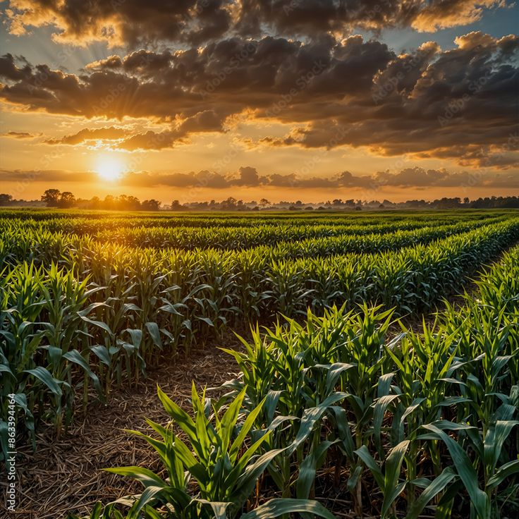
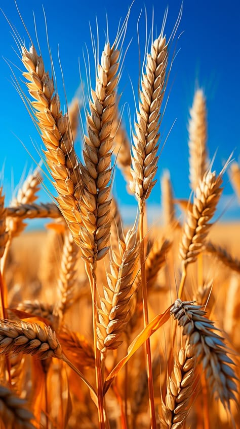
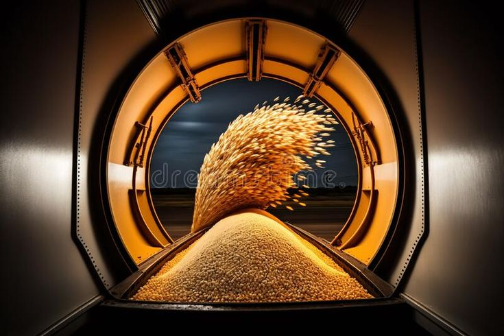

Our Journey of Purity & Perfection
Crafting premium flour products with love, legacy, and authenticity.
Who We Are
KRML is more than a brand — it’s a promise of nourishment and trust. Started with a deep-rooted legacy in traditional grain milling, we’ve combined age-old values with modern techniques to deliver flour products that enrich every meal with purity and quality.
Our Pillars

Uncompromised Quality
We carefully select every grain to ensure purity, nutrition, and taste, maintaining rigorous quality checks from farm to packet.

Rooted in Tradition
Blending heritage with technology, our flours retain the authentic aroma, softness, and healthiness of home-ground flour.

Modern Innovation
Fully automated, zero-touch manufacturing ensures hygiene, consistency, and scalability — ready to serve India and beyond.